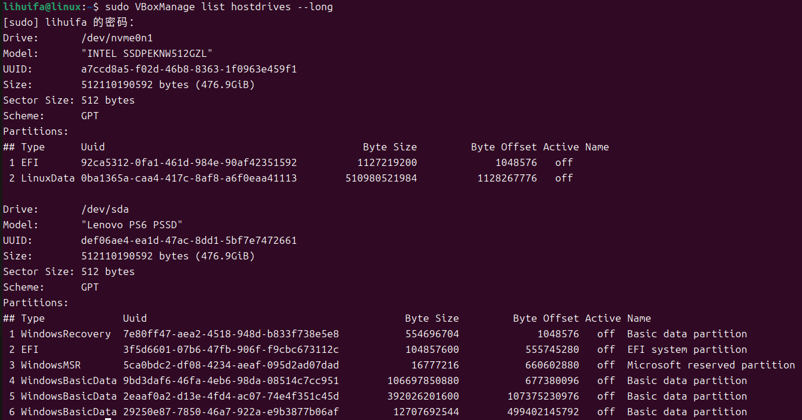

1月1日
如何挂载挂载物理硬盘?
在有些时候，我们可能希望用物理硬盘，可能是用他里面的系统，也可能是为了加快虚拟机的读写速度，所以怎么挂载物理硬盘呢？这里是一个方法（以Linux为例，Windows用户差不多一样，命令在vbox的文件夹下面自己找找把！）
首先用命令
sudo VBoxManage list hostdirves --long
此命令可以查看已经连上电脑的各个硬盘的情况，我这里的情况是这样的

我们想要挂载我们的联想U盘 PS6在虚拟机上就得给这个硬盘创建一个vmdk文件，因为虚拟机得哦用这个文件去访问我们的物理硬盘。所以在用这个命令来创建我们硬盘的vmdk文件
sudo VBoxManage createmedium disk --filename "/home/lihuifa/ps6.vmdk" --formate=VMDK --variant RawDick --property RawDrive=/dev/sda
这样我们就可以在创建虚拟机的时候把这个vmdk文件插入到虚拟机中，这样虚拟机就可以访问我们的硬盘了